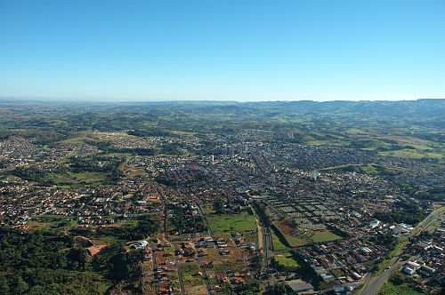

Orgulho de ser
Sanjoanense
Onde a tradição encontra a inovação.
São João da Boa Vista é o alicerce de toda a minha história.
História & Legado
Fundada em 24 de junho de 1824, a cidade nasceu do descanso de mineiros às margens do Rio Jaguari Mirim. Deslumbrados com o pôr do sol e a vista deslumbrante, batizaram o local em homenagem ao santo do dia e à beleza natural.
Elevada à categoria de cidade em 1859, São João consolidou-se como um centro estratégico entre São Paulo e Minas Gerais, preservando sua arquitetura histórica enquanto abraça o progresso.

Vista panorâmica da cidade ao entardecer
Natureza
Situada aos pés da Serra da Mantiqueira, oferecendo um clima único e paisagens que inspiram criatividade.
Potencial
Um hub de educação e tecnologia em ascensão, atraindo mentes inovadoras de todo o país.
Qualidade
Uma das melhores qualidades de vida do estado, unindo segurança, cultura e hospitalidade.